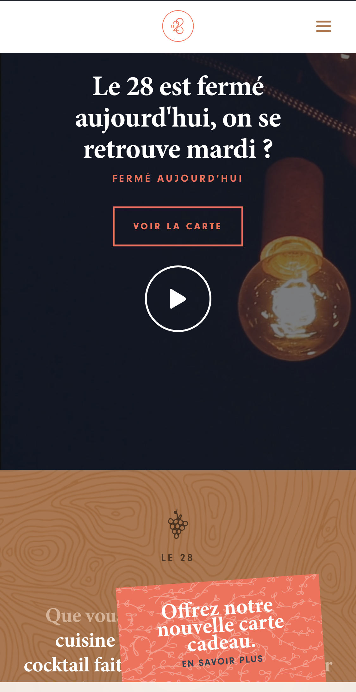
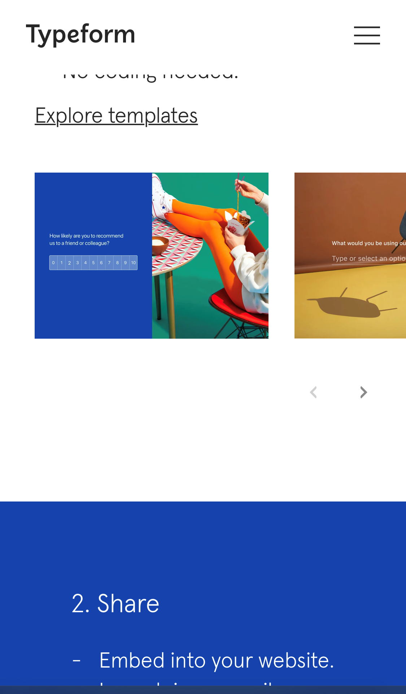

White Space
Contrast
Alignment
 Typeform's left aligned homepage is extremely
clean and modern
but the basic idea is still there
as we expect something similar back<
then minus
the modern renditions as padding or animations.
Typeform's left aligned homepage is extremely
clean and modern
but the basic idea is still there
as we expect something similar back<
then minus
the modern renditions as padding or animations.